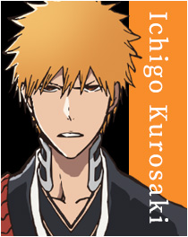
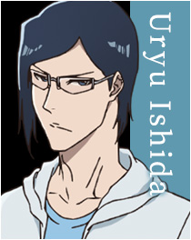
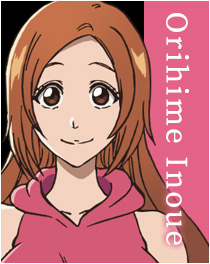
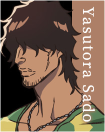
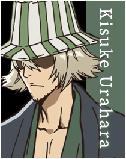
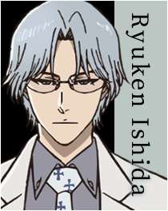

Le récit commence en 2001 au Japon dans la ville fictive de Karakura. Ichigo Kurosaki, lycéen de 15 ans, arrive à voir, entendre et toucher les âmes des morts depuis qu'il est tout petit. Un soir, sa routine quotidienne vient à être bouleversée à la suite de sa rencontre avec une shinigami (死神?, littéralement « dieu de la mort »), Rukia Kuchiki, et la venue d'un monstre appelé hollow. Ce dernier étant venu dévorer les âmes de sa famille et la shinigami venue le protéger ayant été blessée par sa faute, Ichigo accepte de devenir lui-même un shinigami afin de les sauver. Cependant, le transfert de pouvoir, censé être temporaire et partiel, est complet et ne s'achève pas. Ichigo est forcé de prendre la responsabilité de la tâche incombant à Rukia Kuchiki. Il commence donc la chasse aux hollows tout en protégeant les âmes humaines. Le début est centré sur une chasse aux mauvais esprits relativement peu puissants, avec un simple sabre. L'histoire va peu à peu se diriger vers un vaste complot mystico-politique après l'apparition des premiers autres shinigami. Les batailles au sabre du commencement vont alors se métamorphoser en combats dantesques avec des armes aux pouvoirs surprenants et variés, et parfois aux proportions gigantesques.
La ville de Karakura (空座町, Karakurachô, lit. Ville de la Chaise Vide) est une ville fictive du Japon située dans le Monde Humain, à l'ouest de Tokyo.
La ville se trouve régulièrement assaillie par des hollows et toute sorte de monstres à cause du jūreichi (zone de forte concentration d'énergie spirituelle en mouvement continue) actuellement sur la ville.
     